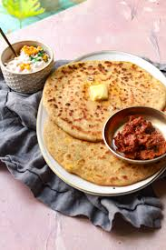

🌿 Patra (Alu Vadi) Recipe

Ingredients
- 6–8 fresh colocasia (taro) leaves
- 1 cup gram flour (besan)
- 2 tbsp tamarind pulp
- 2 tbsp jaggery (grated)
- 1 tsp red chili powder
- 1/4 tsp turmeric powder
- 1/2 tsp garam masala
- 1 tsp sesame seeds
- Salt to taste
- Water as needed to make a thick paste
- Oil for tempering
- Mustard seeds, sesame seeds, curry leaves for tempering
Instructions
- Wash and clean the colocasia leaves. Remove thick veins and pat dry.
- In a bowl, mix besan, tamarind, jaggery, chili powder, turmeric, garam masala, and salt with water to form a thick paste.
- Spread paste evenly on the back of a leaf. Place another leaf on top and repeat the process for 3–4 layers.
- Roll tightly from bottom to top, fold sides in while rolling. Steam for 15–20 minutes until firm.
- Let cool, then slice into pinwheels.
- Heat oil and add mustard seeds, sesame seeds, and curry leaves. Add the sliced rolls and sauté lightly.
Serve With
- Green chutney or tamarind chutney
- As a snack or side dish in a Gujarati thali
💡 Tip: Choose tender colocasia leaves with less prominent veins for best results.